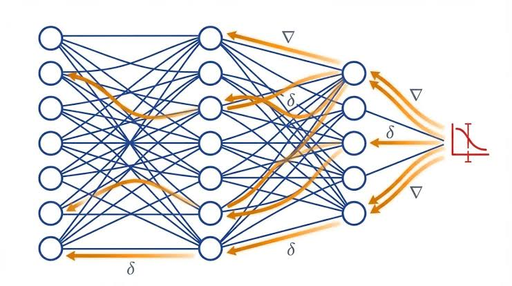
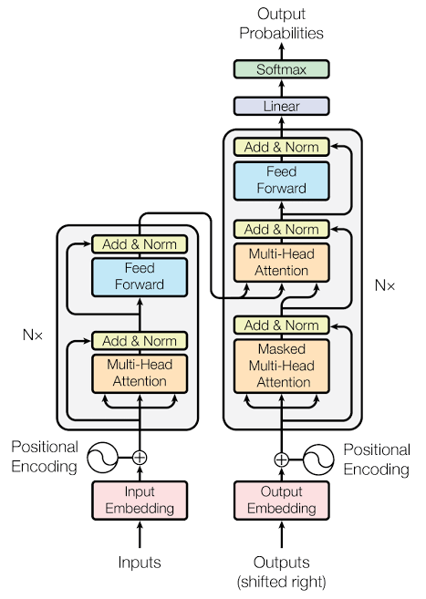

Artificial intelligence (AI) and machine learning(ML) are particularly valuable in domains where vast amounts of data are generated from multiple, dynamic, and interconnected sources. In such environments, the relationships between variables are often unknown, highly nonlinear, continuously evolving, or too complex to be described using conventional mathematical or physics-based models. Rather than relying solely on explicitly formulated rules or first-principles equations, AI learns directly from historical and real-time data, enabling it to uncover relationships that may not be readily apparent to human analysts or traditional analytical methods
By leveraging advanced machine learning and data-driven analytical techniques, AI can process and learn from these large, heterogeneous datasets to Identify hidden patterns and correlations, model complex interactions among multiple variables, and generate predictive insights and forecasts to support optimization and informed decision-making. Consequently, AI is especially well suited for applications involving high-dimensional, data-rich, and dynamically evolving systems where conventional modelling approaches become impractical or insufficient
Mobile network performance, which involves large volumes of data across numerous domains and parameters that influence Quality of Service (QoS), is an area where AI can be used to efficiently analyse complex datasets to identify performance trends, uncover parameter interdependencies, identify and cluaster cells with similar problems and the root causes of their performance degradation, and support scalable data-driven network planning and optimisation. I have done some research in the application of unsupervised machine learning techniques for mobile network performance analysis, trending, and root cause analysis and have presented the basic methodologies with case examples in my book on “UMTS Network Planning, optimization and inter-operation with GSM” published by Wiley, 2007
In recent years, I have also conducted extensive research on many of the algorithms and concepts used in AI, from the unsupervised learning algorithms to supervised deep learning, and other novel concepts in AI as well as their implementation using Python coding, and the associated libraries. and have designed and delivered a number of PowerPoint presentations, listed in the following, for various related workshops and seminars in West Asia